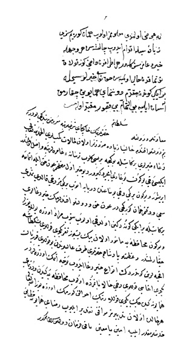

Belge 9: TKSA E.7002/47
Belge 9
Özet:
Ege’de olan gemilerden bazıları (Venedik ablukasından kurtulup) Boğaz’dan içeri birer birer geçip İstanbul’a gelmekte. Şimdi asıl ihtiyaç gemilere kürekçi bulmaktır. Donanma hazırlanıp, muhafazaya ayrılan 1500 yeniçeri Beşiktaş’a çıkarılmış (gemilere binmek üzere), ulûfeleri gönderilmiştir.
Emir (aynen metin):
“Ne ‘arz olundu, ma’lûmumuz olub hemân göreyim sizi, ziyâdesiyle ikdâm edüb çalışasız, her vechile hayr du’âmız sizinledir. Her etrâfdan dahi göz kulak tutmakdan hâlî olmayasın, Hakk ta’âlâ hayırlısıyla bir iki günden mukaddem donanma-yi hümâyûn çıkarmak âsân eyliye, bît-temâm bît-kusûr, mukayyed olasın.”
Yorum:
Ege’deki gemilerin tersaneye gelmesi ve donanmanın hazırlanıp muhafız yeniçerilerle Ege’ye dönmesi söz konusudur. Girit’e 1500 yeniçeri muhafız gönderilmesi düşünülüyor. Vâlide ‘arz üzerine yazdığı emirde bu yardımın bir an önce gönderilmesini ister.
150 gemiden kurulu donanma 1061 Receb ayının 12’sinde (1 Temmuz 1651) Ege’ye hareket etti.85 Belgemiz 1651 Temmuz’dan önceki aylara ait olmalı. Donanmanın Ege’de Venedik donanmasıyla savaşı için bkz. Naîmâ (V, s. 80-82). Kapudân Girit’e yardıma gidemedi. Venedik donanması aldığı Osmanlı kalyonu ile Kandiye önünde gösteri yaptı.
85 Nâimâ, V, s. 79-80, yeniçeri Beşiktaş’ta gemilere bindi.